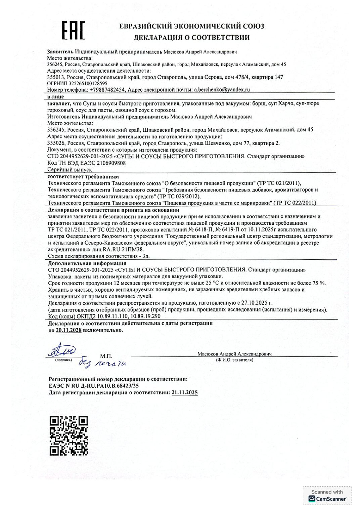

Документы на продукцию
Всё, что подтверждает безопасность продукции, лежит в открытом доступе.
Декларация о соответствии
ЕАЭС N RU Д-RU.РА10.В.68423/25, зарегистрирована 21.11.2025, действует по 20.11.2028 включительно. Распространяется на продукцию, изготовленную с 27.10.2025.
Охватывает: борщ, суп харчо, гороховый суп-пюре, соус для пасты, овощной соус с горохом. Изготовлено по СТО 2044952629-001-2025 «Супы и соусы быстрого приготовления».
Срок годности и хранение
12 месяцев при температуре не выше 25 °C и относительной влажности не более 75 %. Упаковка: вакуумные пакеты из полимерных материалов. Хранить в чистых, хорошо вентилируемых помещениях, защищённых от прямых солнечных лучей.
Протоколы испытаний
Испытания проводил аккредитованный центр ФБУ «Северо-Кавказский ЦСМ». Проверены токсичные элементы, пестициды, радионуклиды и микробиологические показатели. Протоколы легли в основу декларации на всю линейку.
- Декларация о соответствии (скан)
- Протокол испытаний №6418-П, борщ (PDF)
- Протокол испытаний №6419-П, овощной соус с горохом (PDF)

Изготовитель
Индивидуальный предприниматель Масюков Андрей Александрович, ИНН 263512118477, ОГРНИП 325265100128595.
Юридический адрес: Ставропольский край, г. Михайловск, пер. Атаманский, 45.
Адрес производства: г. Ставрополь, ул. Шевченко, 77, кв. 2.